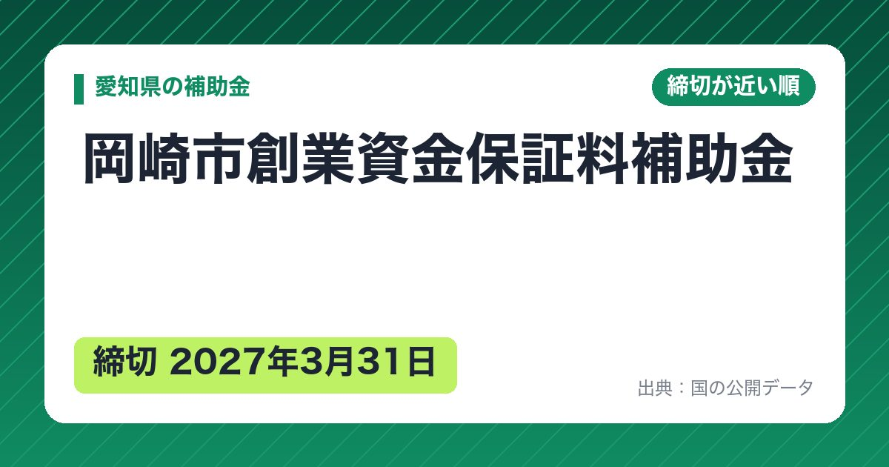

岡崎市創業資金保証料補助金

締切 2027年3月31日｜上限 20万円
岡崎市での新たなチャレンジを応援！創業時の信用保証料負担を軽減します
概要
| 対象地域 | 岡崎市 |
|---|---|
| 補助上限額 | 20万円 |
| 補助率 | 当該融資に係る保証料の45％の額 |
| 受付期間 | 2026年3月31日 〜 2027年3月31日 |
| 対象の従業員数 | 300名以下 |
| 利用目的 | 資金繰りを改善したい |
| 対象業種 | 漁業 / 建設業 / 製造業 / 電気・ガス・熱供給・水道業 / 情報通信業 / 複合サービス事業 / サービス業（他に分類されないもの） / 分類不能の産業 / 農業、林業 / 鉱業、採石業、砂利採取業 / 運輸業、郵便業 / 卸売業、小売業 / 金融業、保険業 / 不動産業、物品賃貸業 / 学術研究、専門・技術サービス業 / 宿泊業、飲食サービス業 / 生活関連サービス業、娯楽業 / 教育、学習支援業 / 医療、福祉 |
公募の内容（原文の抜粋）
■目的・概要
市内で創業されるかた（または創業して間もないかた）で、創業に係る融資（愛知県経済環境適応資金創業等支援資金）を受けたかたに対して、支払った信用保証料の一部を補助する制度です。
■応募資格
愛知県経済環境適応資金（創業等支援資金）を利用して創業したかた（または創業して間もないかた）であり、かつ、岡崎市内に住所（本店）及び主たる事業所があるかたが対象です。
■地理条件
愛知県岡崎市
■備考
・同一年度の申請は1回限りです。
・借換を含む場合は、按分により借換額分に相当する金額が対象から控除されます。
・申請期限は融資実行日から60日以内（補助金の対象となる自動車購入資金を含む場合は、車両登録から60日以内）です。
■問合せ先
岡崎市 商工労政課労政金融係（金融担当）
電話番号：0564-23-6214・6351
ファクス番号：0564-23-6213
■参照URL
https://www.city.okazaki.lg.jp/business/sangyo/1005391/1005392.html
申請前の準備
- GビズIDプライム（電子申請に必須・無料・発行まで1〜2週間かかることあり）：gbiz-id.go.jp
- 直近の決算書（個人事業主は確定申告書の控え）
- 事業計画（何に使い、どう売上・生産性が上がるか）
- 見積書（買う物・頼む工事の）
創業の補助金は、開業届・法人設立と、入金を受ける事業用の口座が先に必要になることが多いです。
広告準備に使えるサービス：
・会社設立を無料で始めるなら【弥生のかんたん会社設立】  （会社を作る手続きを無料でまとめて作れる）
（会社を作る手続きを無料でまとめて作れる）
・業界最安級の手数料で法人口座を即日開設！【ラクスルバンク】  （補助金の入金先になる法人口座をネットで開設）
（補助金の入金先になる法人口座をネットで開設）
愛知県のほかの補助金
- 既存住宅流通活性化緊急促進事業（締切 2026年12月25日）
- 令和７年度（補正） 商用車等の電動化促進事業（建設機械）（締切 2027年1月29日）
- 岡崎ものづくり支援補助金（知的財産権取得事業）（締切 2027年1月31日）
- 岡崎ものづくり支援補助金（依頼試験事業）（締切 2027年1月31日）
- 岡崎ものづくり支援補助金（プラットフォーム活用事業）（締切 2027年1月31日）
- 岡崎ものづくり支援補助金（新製品共創事業）（締切 2027年1月31日）
- 岡崎ものづくり支援補助金（共同研究事業）（締切 2027年1月31日）
- 【東海市】小規模企業等振興資金等信用保証料補助金（締切 2027年3月31日）